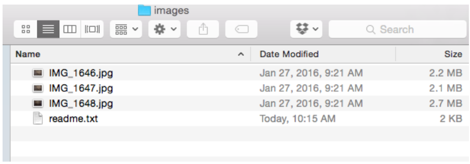
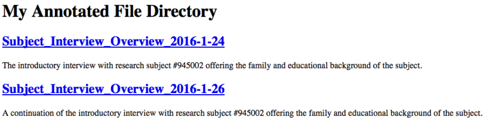

Managing a
Personal Research Archive
Vicky Steeves & Nick Wolf | July 20, 2017

Basic Management Principles

- Use a file management system to annotate and locate files; use a systematic file naming system.
- Use "readme" files to annotate and explain file content.
- Use open file formats that are software agnostic.
NYU Storage Resources
| NYU Google Drive | NYU Box | |
|---|---|---|
| Intended use | Personal archive not including sensitive or secure data | Departmental & personal research with a focus on sensitive or secure data |
| Storage size | Unlimited | Unlimited |
| Sharing and user control | Yes | Yes |
| Versioning and file change tracking | Some | Yes |
Setting up a Cloud Environment:
NYU’s Google Drive
- Download the Drive App for Desktop. This will allow you to integrate your cloud with some file managers like Zotero.
- Know your root directory for your desktop app, e.g.:
MAC | /users/NAME/google drive
Windows | C:\users\NAME\google drive - Remember that files saved to this directory are saved locally first, and then synced with the Drive cloud as scheduled.
- BONUS: Get phone and tablet apps to integrate with mobile data management applications like TurboScan
Zotero for File Management
- Zotero is normally used as a bibliographic management tool.
- But...elements in a Zotero library can be annotated with tags and text notes.
- Zotero will also store links to files, either as a standalone library entry, or as a child element linked to a bibliographic record.
Note: NYU Libraries provides support for learning Zotero. See the Zotero LibGuide for more information.
Zotero for File Management
For example, create a “Document,” and name it after the filename you want to annotate. Enter identifying data and attach notes. Last, attach a link to the file.
Zotero for File Management
Use Zotero to manage files on Google Drive or any other cloud service by going to Preferences >> Advanced >> Files and Folders and changing the base directory:
Project Management with
the Open Science Framework
- FREE, open source (view the source on GitHub!) platform
- Designed to add efficiency to research workflow
- Connects to other tools and services
Project Management with the Open Science Framework
- Wiki: document your lab procedures, standards, etc.
- Collaborators: add collaborators of all levels, on different parts of your project
- Components: sub-projects to organize your research
- Version Control: upload files of the same name & OSF will track your versions!
- Add-Ons: use OSF to bring together tools you use | GitHub
- Registrations: when you have an unchanging version of your project, register it & get a DOI!
Managing Files:
Bulk File Renaming (Windows) using Explorer
- Select and highlight the files you want to change using Shift or Control.
- Right click on the selected files and choose "Rename"
Managing Files:
Bulk File Renaming (Windows) using Explorer
- One of the file names will become active for editing. Enter a systematic file name and press enter.
- All files will be renamed using the chosen file name and numbered sequentially (1) (2), etc.
Managing Files:
Bulk File Renaming (Mac) using Finder
- Select and highlight the files you want to change using Shift or Command.
- Right click/Control + click on the selected files and choose "Rename X Items"
Managing Files:
Bulk File Renaming (Mac) using Finder
- Select one of the rename options: swap out text, add a set text, or apply a custom sequential format.
Managing Files:
Advanced Bulk File Renaming (Windows)
- Download the rename.bat script and save it as rename.bat in the directory of files you wish rename. You may wish to try it on these sample files.
- Go to the Windows Start Menu and type "run cmd"
- Navigate to the directory to the folder containing the files you want to change. For example: type cd documents to change files in a folder called “documents”.
- type rename.bat and hit enter to transform your files! (alternatively, double-click on the file).
Managing Files:
Advanced Bulk File Renaming (Windows)
Here's a few more cool scripts to do some useful bulk transformations.
- Download renamePre.bat & renameSeq.bat
- Stay in the command line & in the directory you want to work in!
- type renameSeq.bat and hit enter.
- type renamePre.bat and hit enter.
Managing Files:
More Bulk File Prefix Renaming (Mac)
- Download the file_rename_MAC script in the directory of files you wish rename. You may wish to try it on these sample files.
- From the Mac Launchpad, look for Terminal and open it.
- Change working directory to the folder containing the files you want to change. For example, type cd Desktop/directory to change files in a folder called “directory” on the desktop.
- type bash file_rename_MAC.sh
Managing Files 2:
Making a README
What is a readme file? A readme file is a .txt, .xml., or .html file that lives in a directory and explains the context and uses of each files in that same directory.
Managing Files:
Making a README
- Open your text editor and create a new file named readme.html
- Save the file in the directory you want to annotate.
- Add the following to the readme.html file (or alternatively, grab the template):
<html>
<head>
<title>My Annotated File Directory</title>
</head>
<body>
<h1>My Annotated File Directory</h1>
<h2><a href="#">File Name</a></h2>
<p>This is an annotation</p>
</body>
</html>Managing Files:
Making a README
For every file in your directory, add an annotation enclosed in the <p> tags and replace the # in the <a> tags with the full path to that filename. Replace the words File Name with the file name you wish to annotate.
Managing Files: Automating a README (Windows)
Dynamically create that readme file using a script:
- Place the script toHTML.bat in the directory where we renamed files
- Go to the Windows Start Menu and type run cmd Your command line should pop up!
- Change working directory on the command line to the folder containing the files you want to change.
- Type toHTML.bat and hit enter.
Look for that readme.html file in the directory, and change the annotation in your text editor as before.
Managing Files: Automating a README (Windows)
Let’s test out a few more cool scripts to generate readme in other formats!
Managing Files: Automating a README (Mac)
Dynamically create that html readme file using a script:
- Place the script readme_MAC_html into the folder of files you want to annotate
- From the Mac Launchpad, look for Terminal and open it.
- Navigate to the folder containing the files you wish to annotate by typing cd FOLDER-CONTAINING-FILES
- Type bash readme_MAC_html > readme.html and hit enter. This examines your directory and outputs the list to a file called readme.html.
Managing Files: CSV and TXT files too (Mac)
- To output a text file listing: readme_MAC_text
- In your terminal, from the wanted directory type bash readme_MAC_text > readme.txt
- To output a csv file listing: readme_MAC_csv
- Type bash readme_MAC_csv > readme.csv
Bonus: Advanced Command-Line File Transformations for Mac/Linux
Try the web resource Sourcecaster, which lists a series of useful file management commands and explains them in detail. Note that you will need to install some dependency programs on your computer. See: https://github.com/datapraxis/sourcecasterRDM Badge
We’ve created a badging system that gives you all points & a ribbon for all the great data management work that you do!
https://osf.io/85bnv
Upcoming Classes
Check the calendar! http://guides.nyu.edu/DS_class_calendar
Thank you! Questions?
Email us: vicky.steeves@nyu.edu & nicholas.wolf@nyu.edu
Learn more about RDM: guides.nyu.edu/data_management
Get this presentation: guides.nyu.edu/data_management/resources
Make an appointment: guides.nyu.edu/appointment